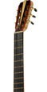

Со дня своего возникновения гитара совершенствовалась и видоизменялась. Уже в XIII веке этот инструмент был популярен и широко распространен в Испании.
Порядка четырех сотен лет изделие обходилась четырьмя струнами, но однажды обрело пятую. Как бы парадоксально это ни звучало, явившаяся на свет пятиструнная модель на самом деле имела не пять, а девять струн. Четыре из них представляли сдвоенную пару.
В конце XVIII века от струн сдвоенной конструкции отказались, но добавили шестую, басовую. С тех пор инструмент приобрел привычный для нас вид.
На первый взгляд, они кажутся одинаковыми, однако, инструменты отличаются:
 Габаритом корпуса: размеры классической гитары меньше.
Габаритом корпуса: размеры классической гитары меньше.- Характеристиками грифа. В традиционном инструменте он тоньше, шире, выполнен цельнодеревянным или состоит из нескольких слоев древесины. В акустике же этот элемент снабжается металлическим анкером.
Еще одно различие между акустической гитарой и классической – в оснащение струнами, но выбор модели зависит, прежде всего, от целей.
Первая модель имеет металлические, а вторая – нейлоновые. В итоге отличия сказываются на звучании инструментов. Резонируя в большем корпусе, струны из металла создают более громкое, яркое звучание, а нейлоновые звучат тише и мягче.
Обучение в музыкальных школах, училищах, консерваториях ведется на классических устройствах, репертуар – тоже классика
Произведения для акустики – джаз, фолк, часто бардовская песня, поп-музыка. Поэтому решение купить гитару классическую, модель в Москве во многом зависит от пристрастий к определенным направлениям в музыке.

Гриф разделен на лады перекладинами и увенчан головкой, где располагаются колки

Верхняя дека, от нее зависит звучание, «индивидуальный голос» изделия, а материалом для ее служат ель и кедр.
Нижняя дека массивнее, для нее выбирают разную древесину, однако, отдают предпочтение палисандру.
Купить классическую гитару для начинающих можно в нашем интернет-магазине. Ассортимент обширен и представлен различными производителями, продукция которых ориентирована на ученические модели
Особую популярность завоевали: немецкий бренд Hohner, японские инструменты Yamaha, модели Washburn, Martinez и Aria. Охотно покупают приспособления китайской марки Flight.
Сколько стоит экземпляр для учеников и любителей? Цена классической гитары находится в пределах 75 – 130 долларов, но стоимость изделий от известных производителей будет выше. Есть и дешевле, для изготовления таких бюджетных моделей используется трехслойная фанера.
Можно дать десятки советов, как выбрать лучшую классическую гитару для начального обучения, какой выбор предпочтительнее – гитара классическая или акустическая, но за советом все-таки стоит обратиться к профессионалам.
Мастеровая модель любого инструмента отличается ювелирной работой, которая возможна только при безупречном владении ремеслом, соблюдении традиций.
В зависимости от применяемой древесины каждая модель обретает определенную окраску звучания, самобытные оттенки. Лучшие классические гитары на поверхности деки обязательно имеют клеймо автора.
Стоимость их несравнима с ценой обычных экземпляров. Например, хорошая классическая гитара Francisco Esteve, отзывы о которой только положительные, стоит от 20 000 рублей.
Для того, чтобы купить хорошую классическую гитару целесообразно ознакомиться с отзывами и фотографиями, изучить характеристики инструментов разных производителей.

Обладателю скромного бюджета нередко приходится искать разумный компромисс между ценой и качеством. В этом случае можно найти приемлемый вариант, обратившись к
консультантам нашего интернет-магазина.